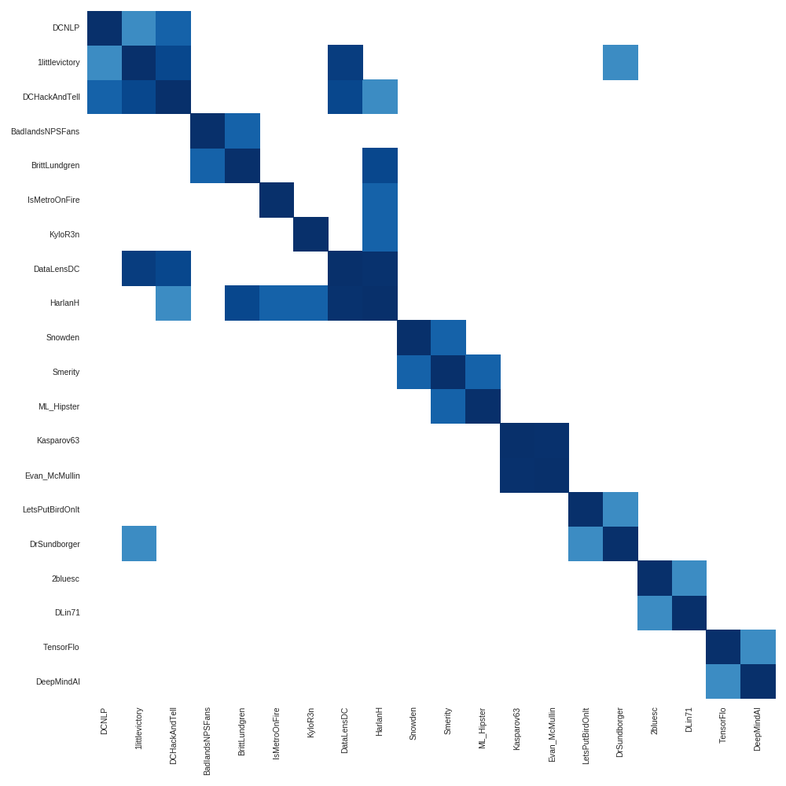

With the rise of pseudo-news,
bots, and mainstream trolls,
is there any signal in this noise?
hell yes, let's find it.
hey twitter
What does an echo chamber look like?
Can we distinguish people inside and out?
Do accounts have multiple chambers?
Can this be done in a programmatic way?
Methodology
Start with a target user
Collect all followers accounts to the user
Collect all tweets from these followers
Clean tweets, remove links, reduce emoji, 😄
Hash all tweets and find those similar, via
Simhash
Compute a similarity score between all accounts
Cluster accounts on similarity
@metasemantic
(that's me!)

No real communities, no large following
@RichardBSpencer
white supremacist, alt-right
"Hail Trump, hail our people, hail victory!" Spencer has popularized the term 'alt-right' to describe the movement he leads. Spencer has said his dream is 'a new society, an ethno-state that would be a gathering point for all Europeans,' and has called for 'peaceful ethnic cleansing.'